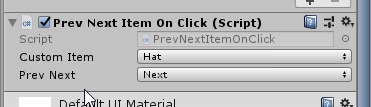
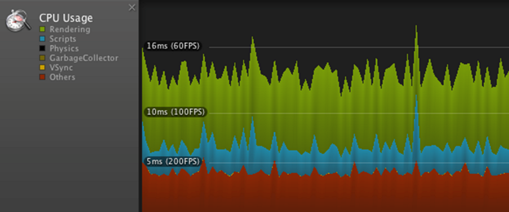
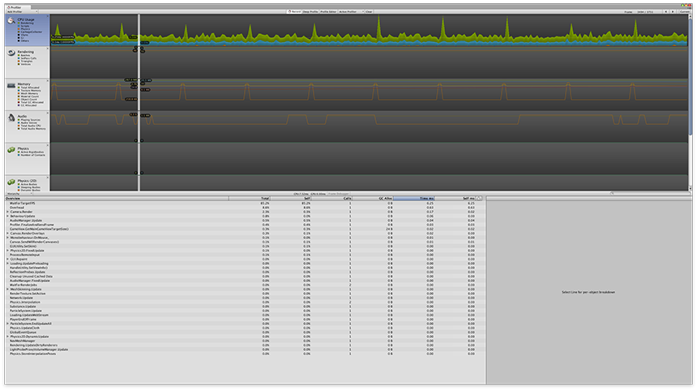

Events with multiple arguments
Unity 3D college on debugging:
Unity Debugging video tute:
Unity official: optimization garbage collection
Good news! During assessment marking I realised I was wrong about multiple arguments to our static events using Action<> and delegate! Luckily Gian looked into it harder, and I’ll be updating the old course resources and my notes to show there are multiple overrides of Action.
You can specify argument counts with Action
Microsoft docs for System.Action variants
Here’s my inspector showing 2 arguments.

Here’s the code to pass them in an event
public class PrevNextItemOnClick : MonoBehaviour { public static event Action<string, string> OnPrevNextRequested = delegate { }; ... void OnMouseClick() { // Now we can call with two strings OnPrevNextRequested(_customItem.ToString(), _prevNext.ToString()); } }
And to receive them
// Giving our handler to PrevNextItemOnClick doesn't change, // Just the signature of the handler private void OnPrevNextHandler(string item, string prevOrNext) { Debug.Log("Model heard arrow say " + item + ", " + prevOrNext); charState[item] = (prevOrNext == "previous") ? decrementPosIntLooping(charState[item], counts[item]) : incrementPosIntLooping(charState[item], counts[item]); // Then throw a modelUpdate event that lets peeps look at the state OnCharacterChanged(charState); }
I declared some enums, which we already know about. What you might not have discovered is the ToString() function you can call on them to get their defined name.
// ... includes public enum PrevNext { previous, next }; public enum Customisable { hat, face, body } public class PrevNextItemOnClick : MonoBehaviour { // Declare a variable of enum's type, expose to editor with SerializeField [SerializeField] protected Customisable _customItem; [SerializeField] protected PrevNext _prevNext; //... later in class: void OnMouseClick() { OnPrevNextRequested(_customItem.ToString(), _prevNext.ToString()); }
I went with the first idea that came to mind for character customiser arrow clicks: typing next and previous into the inspector fields, then joining them in a string with a separator: next_hat. That was sent to the model, which split them apart.
private void OnPrevNextHandler(string itemPrevOrNext) { string item = itemPrevOrNext.Substring(0, itemPrevOrNext.IndexOf("_")); string prevOrNext = itemPrevOrNext.Substring(itemPrevOrNext.IndexOf("_") + 1); charState[item] = (prevOrNext == "previous") ? // Go down or up, looping at extens decrementPosIntLooping(charState[item], counts[item]) : incrementPosIntLooping(charState[item], counts[item]); // Then throw a modelUpdate event that lets peeps look at the state OnCharacterChanged(charState); }
It was an easy workaround for me because I’ve chopped up strings in the past, but it has a few downsides:
Inspector screen shot
Yep, you could just pass your own custom struct or object.
The types of bugs in our code seem to be at least as numerous as the tools available to us. So far we’ve had a pretty limited set of techniques for finding them: logging to console, running the build often, working in small scale/isolation when trying something out.
Eventually though, you get
A debugger is a shockingly powerful program that can look into the memory used by and execution of your program in real time. It can
Some of you will have used a debugger in say visual studio for c++/c sharp, or elsewhere for python. You might think
Coming pictures
Attach Editor prefs unity
breakpoint picture
stopped at breakpoint
Inspecting variables
Breaking, stepping over, stepping through.
Try putting a break point at any of the following and exploring:
So far we’ve usually tried to debug by coming up with a theory and then putting in Console.Log. That only helps us if our theories are on point.
Using the debugger lets us look much more quickly at loads of things, gather loads of evidence, and a surprise result in that evidence can lead you to a bug source you’d never considered.
Missile Command: As wave after wave of death dealing alien hardware is flung at the homes and businesses of everyday earthlings, masses of resources are going into the creation of weapons and cleaning up in their aftermath.
This describes life in the game, but also life for our game engine.
We’re instantiating human and alien missiles, trails and explosions for potentially hunderes of waves. Each one uses memory and processor time, and it takes time and effort for unity to recover resources when each is finished with.
We often see failures of optimisations as constant low frame rates, or sudden frame drops.
You might think about this much on quade core Windows machines with 16GB of RAM, but if you’re outputting to other platforms this becomes critical
What we had. Malloc, dealloc.
Profiler!
Last week I gave you guys a function to move a missile over time, and it used time.elapsedTime to make sure things moved well regardless of how long frames took to render.
Today we talked about how garbage collection can impact your game.

How can we visualise it?
How can we manage problems like big garbage collection hits and constant resource creation
Let the garbage man decide what’s unwanted and take it away.
Obvious upside:
Almost no manual memory management!
Dangers for the inexperienced: Garbage collection tends to take what would have been done manually, spread out over time, and lump it into passes.

Concept of object pooling.
Go with simple example. Link to old mate.